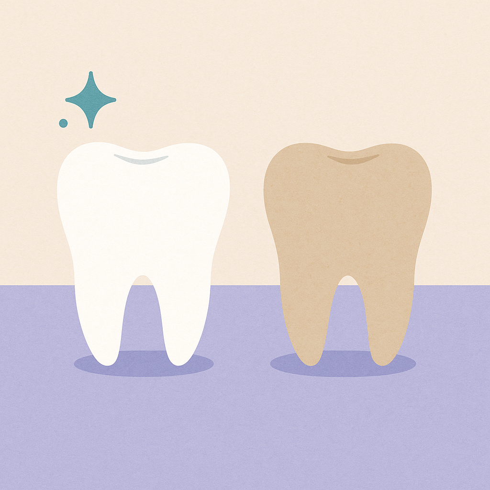
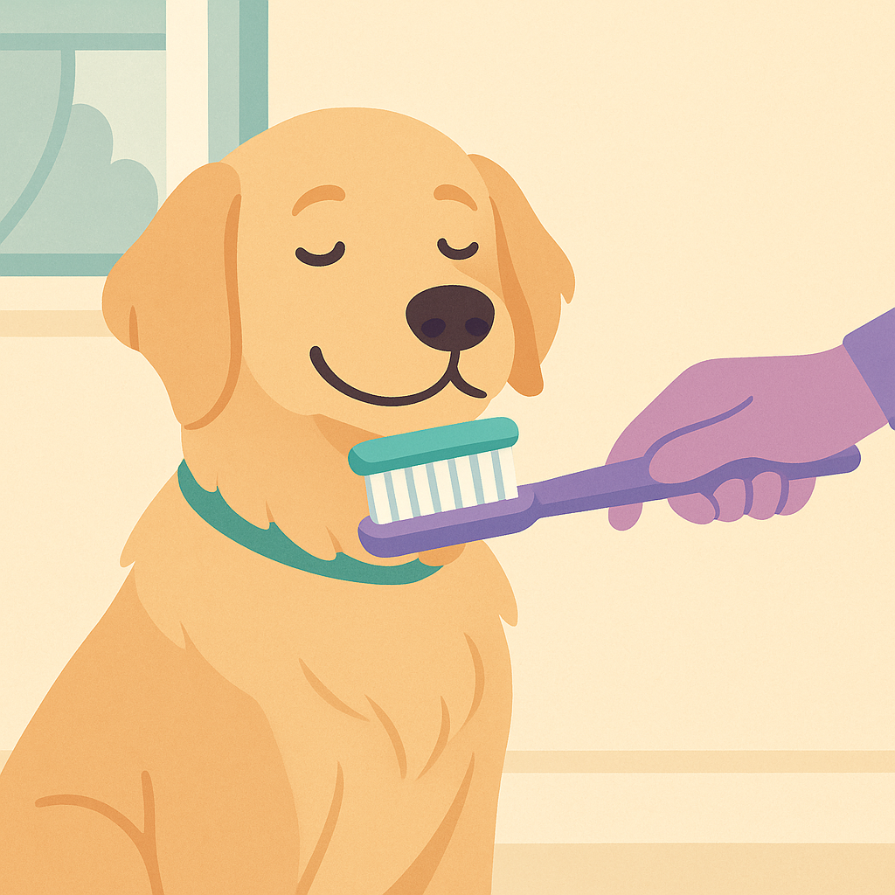

Pet Dental Care — Do You Really Need to Brush Their Teeth?
Contents
Introduction
Pet dental disease is one of the most common health problems in UK dogs and cats — yet most owners barely think about it. Your pet's breath smells bad, you notice some yellow on their teeth, they seem fine otherwise, so what's the problem?
The problem is that your pet's teeth aren't just about eating. Dental disease leads to infections that spread to the heart, kidneys, and liver. It causes pain so severe many pets stop eating. And it's entirely preventable with basic home care and regular professional cleaning.
Here's the truth about pet dental care, what vets actually recommend, and how to prevent thousands in dental costs (and suffering) with simple daily habits.
Quick Answer
Yes, you should brush your pet's teeth — ideally daily, but even 3-4 times weekly makes a massive difference. Professional dental cleaning costs £200–400 and lasts 1-2 years, preventing bacterial infections that can damage organs. It's one of the best preventative investments you can make.

Why Dental Health Really Matters
Dental disease in pets isn't just cosmetic. Here's what happens:
- Plaque and tartar accumulate: Without brushing, bacteria colonise the tooth surface
- Gum inflammation: Inflamed gums become infected (gingivitis)
- Tooth loss: Infection spreads below the gum line, destroying the tooth root (periodontitis)
- Systemic infection: Bacteria enter the bloodstream and damage the heart, kidneys, and liver
- Severe pain: Infected teeth hurt. Many pets stop eating, leading to malnutrition and weight loss
Studies show that pets with untreated dental disease have significantly shorter lifespans and higher rates of heart and kidney disease. This isn't about vanity — it's about health and longevity.
The Cost Argument
Think brushing is tedious? Professional dental cleaning costs £200–400. A tooth extraction due to advanced disease costs £150–300 per tooth. Root canal therapy (if your pet's vet even offers it) costs £300–600. Prevention is incomparably cheaper than treatment.
Signs Your Pet Has Dental Disease
If your pet shows any of these, visit the vet:
- Bad breath (worse than normal "dog breath")
- Yellow or brown discolouration on teeth
- Visible tartar buildup
- Red or swollen gums
- Bleeding gums or blood in saliva
- Loose or missing teeth
- Excessive drooling
- Reluctance to eat, especially hard food
- Pawing at the mouth or face
- Facial swelling or discharge under the eye (sign of dental abscess)
Home Dental Care — What Actually Works
Brushing (The Gold Standard)
How often: Daily is ideal. 3-4 times per week is acceptable. Once weekly is better than nothing.
How to start: Don't just jam a brush in their mouth. Take it slowly:
- Let your pet lick pet-safe toothpaste off your finger (positive association)
- Gently rub their gums and teeth with your finger for 30 seconds
- After a few days, introduce a soft toothbrush or finger brush
- Brush the outer surfaces (where plaque accumulates) for 1-2 minutes
- Focus on the gum line, not the crowns of the teeth
Products: Use toothpaste specifically for pets (not human toothpaste, which contains fluoride and xylitol — both toxic to animals). Brands available at Pets at Home and online include:
- Beaphar Enzymatic Toothpaste: £3–5, comes with soft brush
- Virbac C.E.T. Enzymatic Toothpaste: £4–7, vet-recommended
- Dentafresh Pet Toothpaste: £2–4, budget option
Dental Chews & Treats
These alone won't prevent dental disease, but they help:
- Rawhide chews: £2–5, help mechanically clean teeth
- Dental kibble (Royal Canin, Hill's): Specially textured to promote chewing
- Dental treat sticks (from Pets at Home): £3–8 per box
- Raw carrots or apple pieces: Free and effective (supervise to prevent choking)
Water Additives
Products like Oxyfresh or VetAqua add to drinking water and claim to reduce plaque. Evidence is mixed. They're worth trying (£4–8), but they're not replacements for brushing.
Diet Quality
Soft, wet food contributes to plaque buildup. Kibble is mechanically better for teeth, though no diet alone prevents dental disease. If possible, offer your pet dry food or raw meaty bones (with vet approval and supervision).

Professional Dental Cleaning — What to Expect
How It Works
- Your pet is given a general anaesthetic
- The vet performs a full mouth examination and X-rays (to check for disease below the gum line)
- Ultrasonic scaler removes plaque and tartar
- Teeth are polished to smooth the surface (making plaque reattachment harder)
- If teeth are beyond saving, they're extracted
- Your pet wakes up with clean teeth and a better chance of long-term oral health
Cost in the UK
- Simple cleaning (no extractions): £200–400
- With 1-2 extractions: £300–500
- With multiple extractions: £400–800+
- Pre-cleaning blood test (recommended for senior pets): £50–100
When to Schedule
Ideally, a healthy pet should have cleaning every 12-24 months. If your pet already has tartar buildup, don't delay — the longer you wait, the more damage occurs.
Anaesthesia Safety
Many owners worry about anaesthesia risks, especially for older pets. This concern is valid, but consider the alternative: untreated dental disease that damages the heart and kidneys over time. Modern anaesthetics are very safe, and your vet will run blood tests first for senior pets. The risk of not cleaning is often higher than the risk of the procedure.
Recommended Dental Products Available in the UK
Toothbrushes & Pastes
- Virbac C.E.T. Toothbrush (soft bristles): £3–5 from Pets at Home or online
- Beaphar Fingerbrush: £2–3 (easier for beginners)
- Oxyfresh Pet Toothpaste: £5–8 (enzymatic formula)
Dental Chews
- Nylabone Dura Chews: £3–6 per chew
- Whimzees Dental Chews: £4–7, vegetable-based
- Pedigree Dentastix: £2–4, widely available
Water Additives
- Oxyfresh Water Additive: £7–10 per bottle
- Vet Aqua Mouth & Gum Support: £6–9
Budget Alternatives
- Raw carrots (free, supervise pet)
- Apple pieces (free, remove seeds)
- Plain chicken necks or raw meaty bones (if your vet approves)
Most of these products are available from Pets at Home, Amazon, or Vets Online UK. Your Pet Nutrition also offers Denta Soft, a vet-formulated dental chew supplement.
Key Takeaway
Dental disease is preventable. Brush your pet's teeth at least 3-4 times weekly (daily is ideal), offer dental chews, and schedule professional cleaning every 12-24 months (cost: £200–400). This routine costs roughly £20–30 per year and adds years to your pet's life whilst preventing organ damage, tooth loss, and pain. Pets with clean teeth live longer, happier lives. It's one of the best investments in preventative pet health you can make.
Related Guides

Vet Bills UK — What Should You Expect to Pay?
Real prices for common vet procedures, emergency costs, and how to prepare financially. Plus guidance on when pet insurance makes sense.
Read
How to Protect Your Dog From Ticks, Fleas and Worms
Seasonal parasite prevention guide with product recommendations, costs, and when to see your vet. Keep your dog healthy year-round.
Read
Senior Dog Care — What Changes After Age 8
Health changes, diet adjustments, supplements, and vet visit frequency for aging dogs. Plus why lifetime pet insurance becomes crucial.
Read